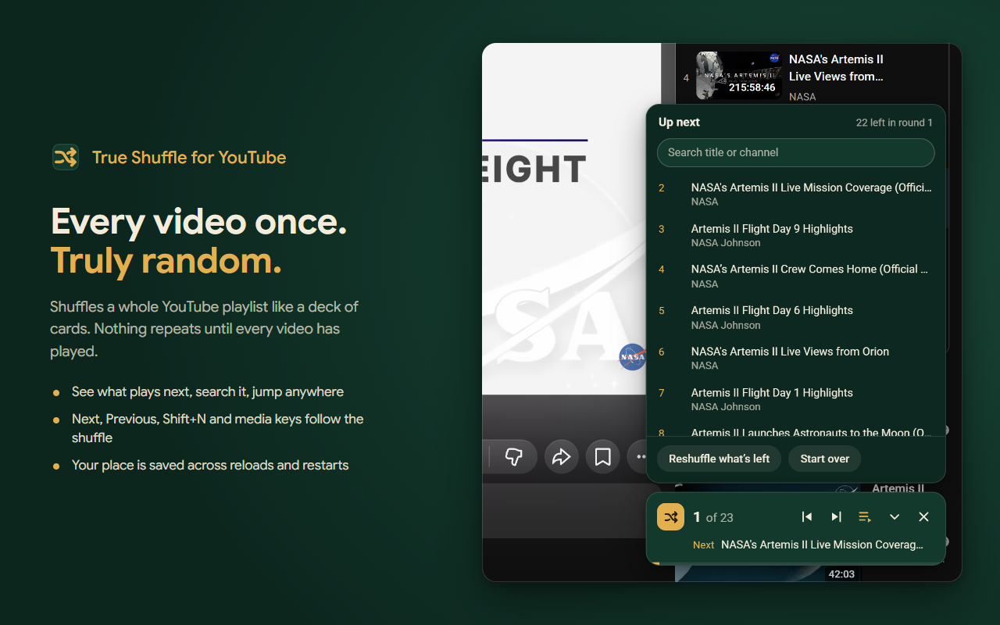
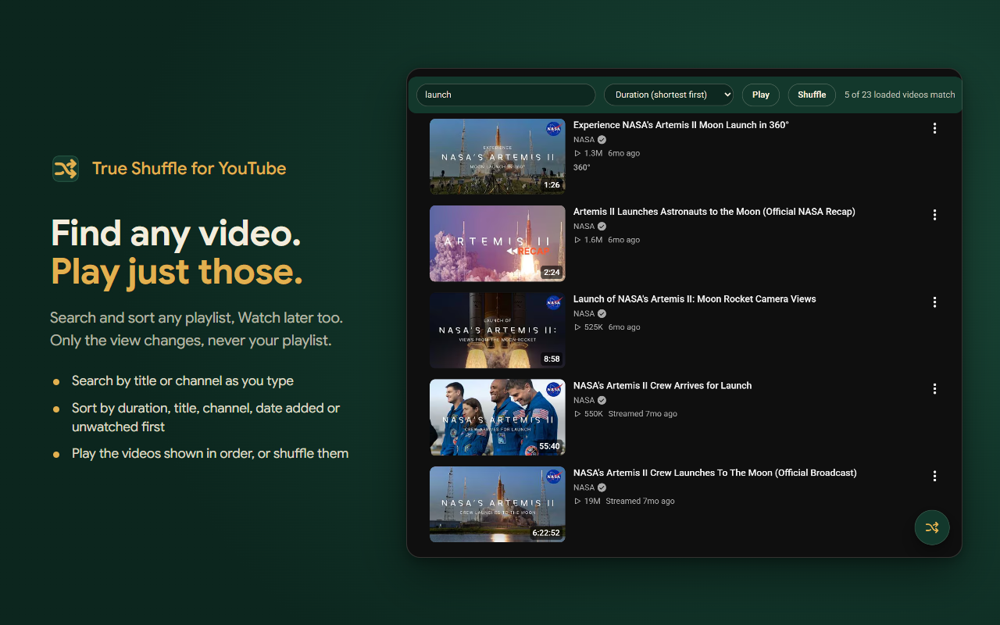
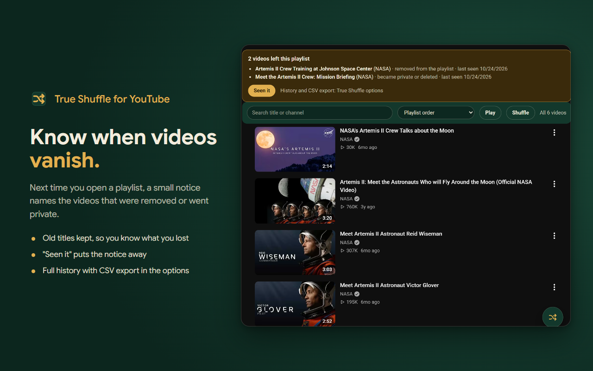
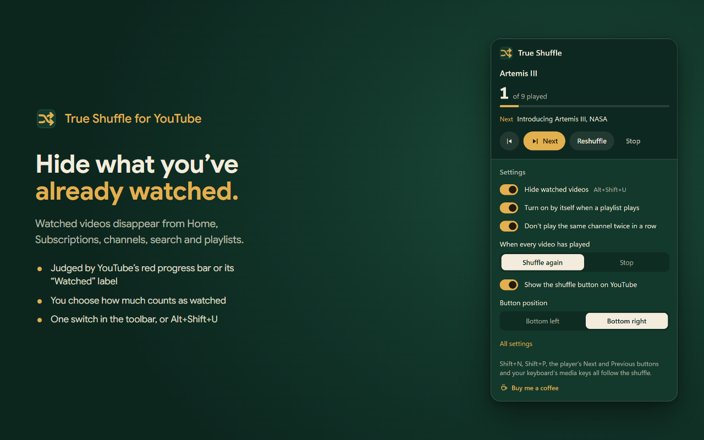
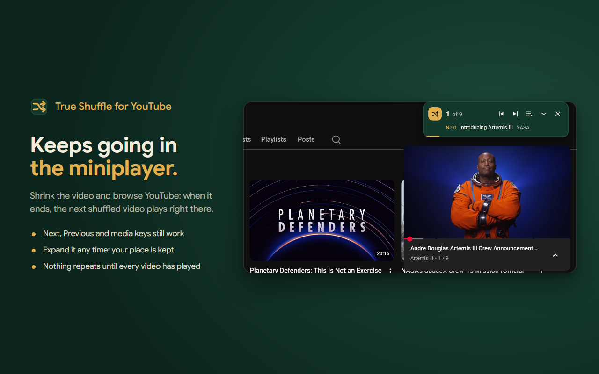
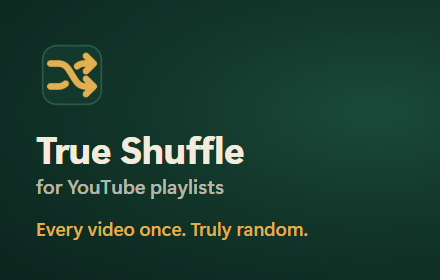
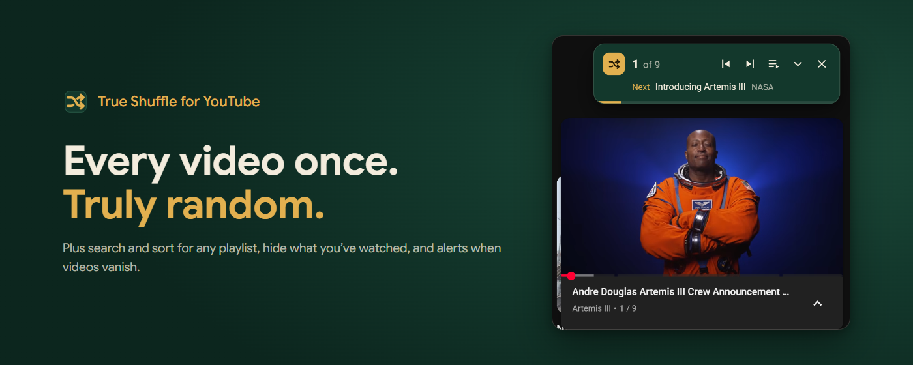

Chrome Web Store listing · True Shuffle 1.1.0
Open the Developer Dashboard, pick True Shuffle, and go down this page tab by tab. Every text has a Copy button. The images are the files next to this page, in this folder (store/).
1. Package
dist/true-shuffle-for-youtube-v1.1.0.zip (the one without “firefox” in its name)
Package tab → Upload new package. Build it with node store/pack.js dist after the last commit.
True Shuffle for YouTube
Not typed in the dashboard: it comes from the package, in every language.
Shuffles a whole YouTube playlist like a deck of cards: every video plays once, in a truly random order, before anything repeats.
Also from the package, translated into Italian, Portuguese (Brazil) and Spanish.
2. Store listing
No word appears more than five times, web addresses included.
Entertainment
English
The other languages of the package: each needs this same description, translated, or the review flags “Mismatching metadata”. In the Store listing tab, switch the language menu at the top of the form to each language below, paste its description, and click Save draft. The images can stay the English ones.
Graphic assets: upload each file from this folder, in this order.
store-icon.png · 128×128
screenshot-1.png · 1280×800 · the card and Up next
screenshot-2.png · 1280×800 · search and sort
screenshot-3.png · 1280×800 · videos that vanish
screenshot-4.png · 1280×800 · the popup, hide watched videos
screenshot-5.png · 1280×800 · the miniplayer
promo-small.png · 440×280
promo-marquee.png · 1400×560 · optionalAdditional fields
None
No (leave it off)
3. Privacy
storageunlimitedStoragescriptingHost permission https://www.youtube.com/*No, I am not using remote code.
Data usage: tick these three boxes (the store counts data kept only on the user’s device too).
- Authentication information: requests that read private playlists carry the sign-in header YouTube's page creates from the user's YouTube cookie. It is sent only to youtube.com and never stored.
- Website content: playlist titles, video titles and channel names, stored on the user's device to run the shuffle, to tell the user when videos disappear from a playlist they open, and to search it.
- Web history: which playlists the user shuffled or opened, their titles and when, and which of their videos played, kept only on the user's device to resume the shuffle and to compare a playlist with the last visit.
Then tick the three certifications:
- I do not sell or transfer user data to third parties, outside of the approved use cases
- I do not use or transfer user data for purposes that are unrelated to my item's single purpose
- I do not use or transfer user data to determine creditworthiness or for lending purposes
First turn GitHub Pages on: repo Settings → Pages → Deploy from a branch → main, /docs. Open the link once to check it works before you paste it.
4. Distribution
Public
All regions
What’s new in 1.1.0
Then press Submit for review.